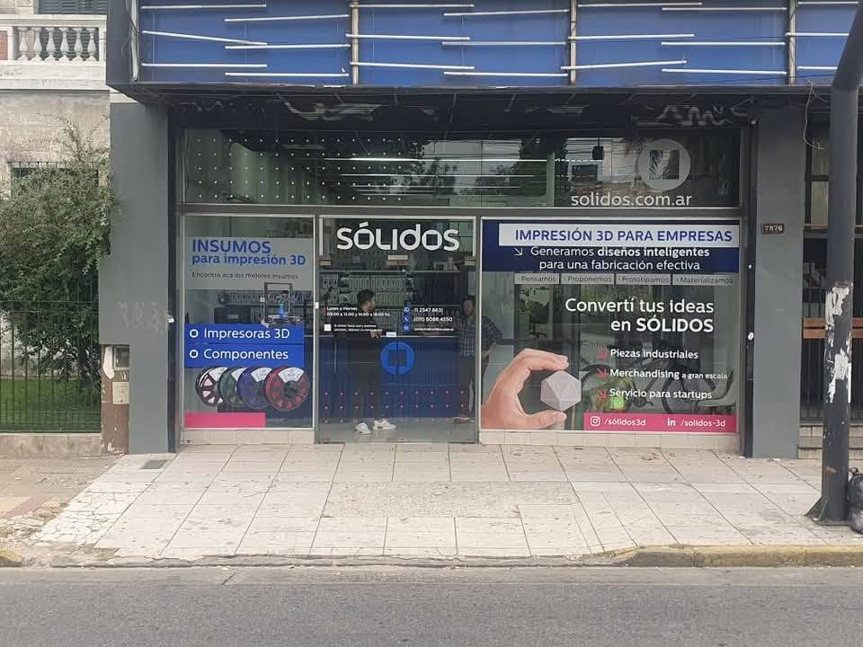
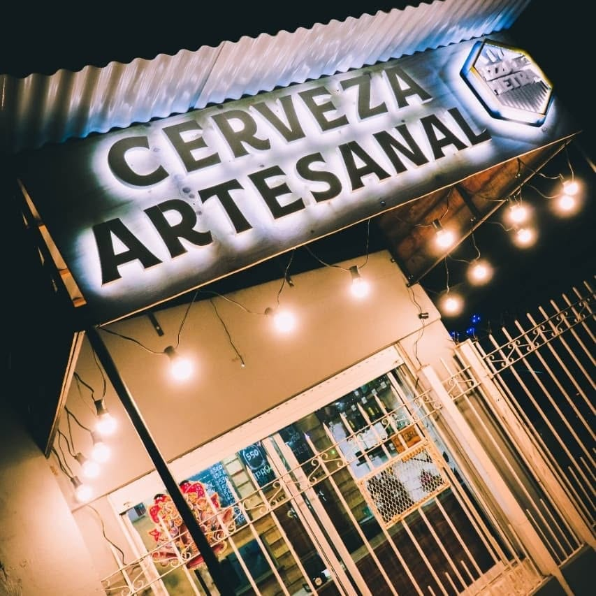
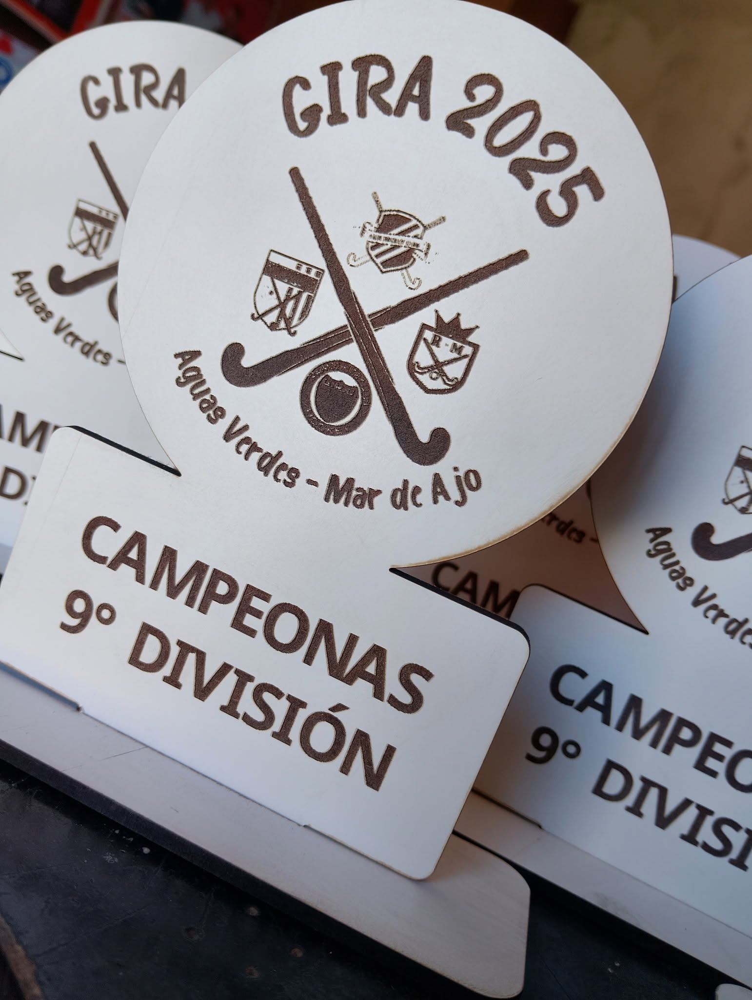

FIGURAS Y PERSONAJES
Siluetas a medida
Figuras decorativas, personajes, productos y formas especiales para cumpleaños, eventos, vidrieras y espacios comerciales.
Consultar por WhatsApp ↗Creamos figuras, personajes, siluetas, carteles y exhibidores personalizados en PVC espumado. Podemos aplicar vinilo impreso para lograr colores definidos y piezas listas para exhibir.

Te asesoramos según el uso, el diseño, las medidas y el acabado que buscás. Cada trabajo se define a medida.
Figuras decorativas, personajes, productos y formas especiales para cumpleaños, eventos, vidrieras y espacios comerciales.
Consultar por WhatsApp ↗Piezas de apoyo, carteles de mostrador, exhibidores y elementos de comunicación para puntos de venta.
Consultar por WhatsApp ↗Carteles impresos, logos, señalética y placas para interiores, comercios, stands y eventos.
Consultar por WhatsApp ↗Espesores y formatos de referencia. La disponibilidad y la elección final se confirman según cada proyecto.
¿No sabés qué material elegir? Enviá una foto de referencia, medidas aproximadas y contanos dónde se va a instalar o utilizar. Te recomendamos la opción adecuada.


Podés enviarnos una imagen de referencia, altura deseada y cantidad. Te ayudamos a preparar el diseño y definir el espesor.